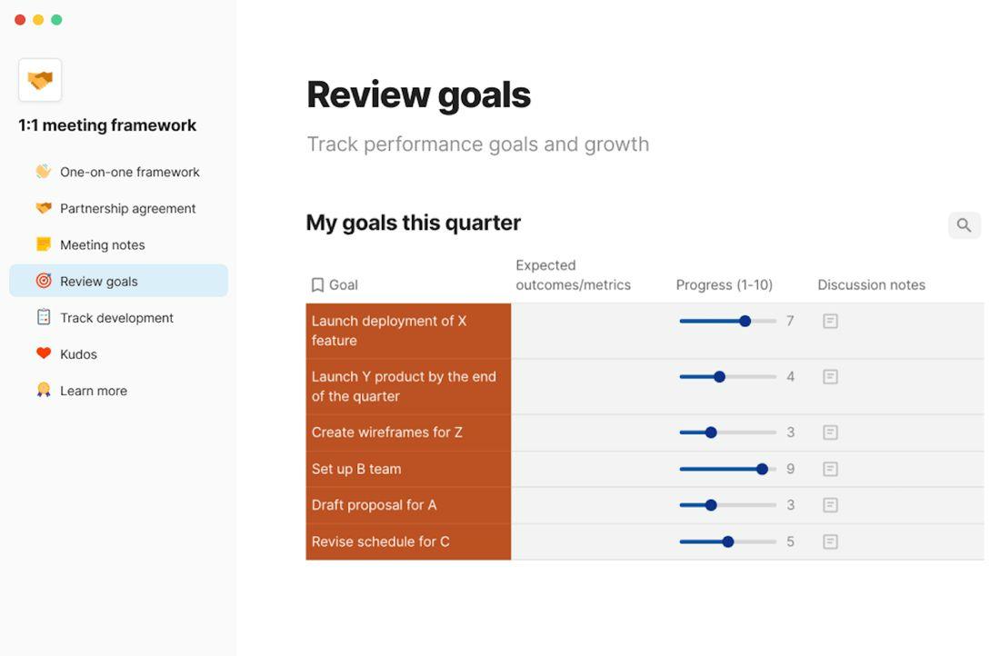
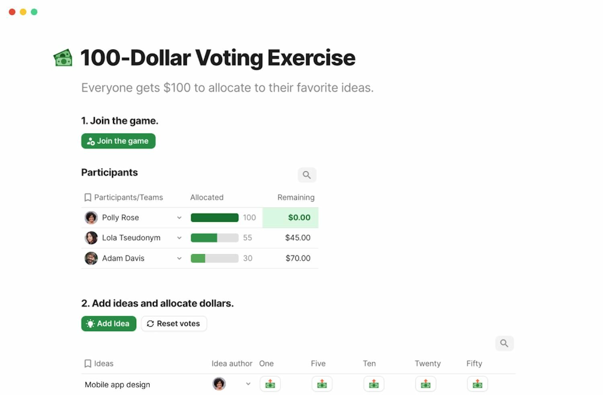
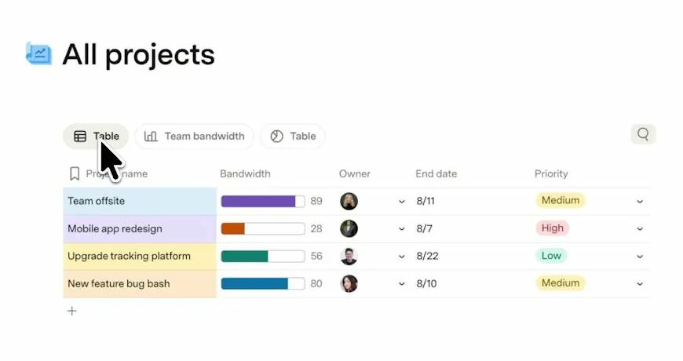

Coda Review: Now Superhuman Docs, Still the Thinking Person's Doc
6.6 We Used It Score, out of 10
Ratings by business type
Best suited to: teams where a few makers build trackers, hubs and small apps for many colleagues, operations and product teams, and Notion users who keep hitting the ceiling of its formulas.

We Used It HQ: Streamlining business, whatever your size
The short answer
Coda, renamed Superhuman Docs in July 2026, is Notion's most interesting rival: documents with connected tables, spreadsheet grade formulas, buttons and integrations (called Packs) that turn a doc into a small working app. It is more powerful than Notion in the ways builders care about, and steeper to learn in the ways everyone else cares about. Its pricing model is the friendliest in this series for teams: only the people who create docs pay. Everyone who edits or views is free.
What changed since it was called Coda
Grammarly acquired Coda in December 2024, renamed itself Superhuman in October 2025, and on 8 July 2026 the product became Superhuman Docs. Per the vendor, nothing was removed: docs, tables, Packs, automations and formulas all carried over, and old links redirect. Three things did change. The name, the address and the look. Prices for new customers rose: Pro from $10 to $12 per Doc Maker per month billed annually, and the Team tier became Business at $33, up from $30. And Coda AI was replaced by Docs AI, a beta assistant, with the old AI credit system paused while the beta runs. Existing customers keep their old rates, which is decent of them.
Where it wins

- Docs that behave like apps. A project tracker, a decision log and a budget can live in one document, wired together with formulas and buttons, in a way Notion users can only approximate
- Formulas with real depth. Spreadsheet grade logic inside documents is Coda's home ground, and for data that must calculate, it outmuscles Notion
- Doc Maker billing. Pay only for creators. A 20 person team with 4 makers pays roughly $48 a month on Pro, where a per seat rival charges for all 20 heads. For businesses where a few builders serve many readers, this is the cheapest serious option in the series
- It is a Finta destination, like Notion and Airtable: live bank data can sync into a doc, so budgets can watch real balances

Where it frustrates
- The learning curve, which is this reviewer's whole story. Every comparison we checked rates Coda steeper than Notion: around 30 to 60 minutes of tutorials to feel comfortable, against Notion's 15, and formula mastery measured in hours. A blank Coda doc can feel intimidating, and our trial ended the way many do: respectfully, and early
- Sluggishness on very large docs packed with tables and formulas is a recurring user complaint
- As a project tool specifically, it inherits the document family's limits: timelines and progress are things you construct, not scheduling machinery that comes in the box. Waterfall project managers will build a lot before they manage anything
- The ground is still moving. A new owner, a new name and AI pricing in beta means the product you evaluate this quarter is mid renovation. Nothing suggests abandonment, the opposite, but budget a little uncertainty
The AI, and its price tag
Docs AI, in beta at the time of writing, can build tables, draft and edit pages, resolve comments and pull data from PDFs and images inside the doc. The old Coda AI credit allowances were paused in July 2026 during the beta, with paid Doc Makers getting AI under fair use limits and a new credit system promised later. Translation: the AI is currently bundled and its future price is unknown. Our duplication warning applies in the meantime; the table building and data extraction tricks, though, are Coda's own and not something a general subscription does inside your docs.
Reporting and dashboards
A Coda doc can present beautifully: tables, charts and text in one client readable page, which makes it a decent exec reporting surface for a team that builds deliberately. Like Notion, it is reporting you assemble, not reporting that arrives. The makers build it once, and the free editors and viewers are exactly the audience it suits.
Pricing
Checked November 2026. Free plan is genuinely usable. Pro $12 per Doc Maker per month billed annually ($15 monthly). Business $33 per Doc Maker ($40 monthly). Enterprise by quote. Editors and viewers cost nothing on every tier. Pre rebrand customers keep Pro at $10 and the old Team plan at $30 while they stay put.
Try it:
Visit Superhuman DocsVerdict
The builder's choice. If you are the sort of person who reads about formula depth and leans forward, Coda, Superhuman Docs, will reward the climb, and its billing model will save you money while you climb. If you bounced off the trial the way our reviewer did, believe the bounce: Notion is the gentler document home, and the dedicated project tools in this series all schedule better than either of them.
Try it: Visit Superhuman Docs
Research note: Rebrand, pricing and AI changes checked against the vendor's help centre and published comparisons, November 2026. Trial experience is the author's own.
Watch: the official video
“Welcome to Coda 101”, from the official Coda (Superhuman Docs) YouTube channel.